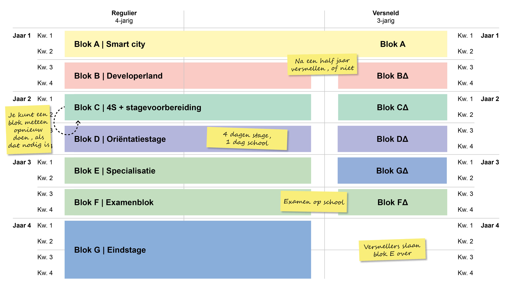

Blokken:
Dit zijn de trajecten van onze opleiding. Zoals je kan zien zijn er twee verschillende, namelijk de regulier traject en versnellers traject. Normaal gesproken is de opleiding 4 jaar lang met elk jaar 2 verschillende blokken, maar als je zelf ambitieus bent en goed blijft werken in de eerste blok van het eerste jaar, kan je gaan versnellen om de opleiding in 3 jaar te doen.
